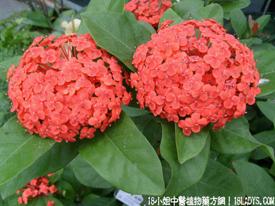

(本文解释权归中药材天地网兄弟站-18小姐中医植物药方网所有,如需转载请注明出处)

别名：红缨树。
植物名：龙船花。
生长环境：本品为山野林地间常见的小灌木。
分布：广东各地皆可见，尤以中部、南部山地较多。
入药部分：根。
采集期：全年采根，五至七月采花。
自采地点：性微凉、味微苦。
功能：清降肝火、排脓、消肿、去腐生肌。
主治、用量和用法：1、劳伤咳血：干根5钱至2两，清水煎服，或加猪瘦肉同煎，加甘草3钱亦可；2、胃痛、气痛用法如上。
（方歌）龙船花根性微凉，劳伤咳血扬其长，肝胃气痛都兼治，瘦肉同煎效更良。
附录：（花）治肺燥咳、衄血、生嘶、鼻渊、小肠气。
用法：干花5钱至1两，猪肉熟适量，煎服。
参考资料：《广东中医》（1959.9）介绍：红缨树根2两、甘草3钱，水适量，煎服，或加猪瘦肉，治肺结、咯血，认为远胜于三七及血见愁等。
又：佛山民间斗红菱为龙船花，与本品不同，用时宜鉴别。
(本文解释权归中药材天地网兄弟站-18小姐中医植物药方网所有,如需转载请注明出处)